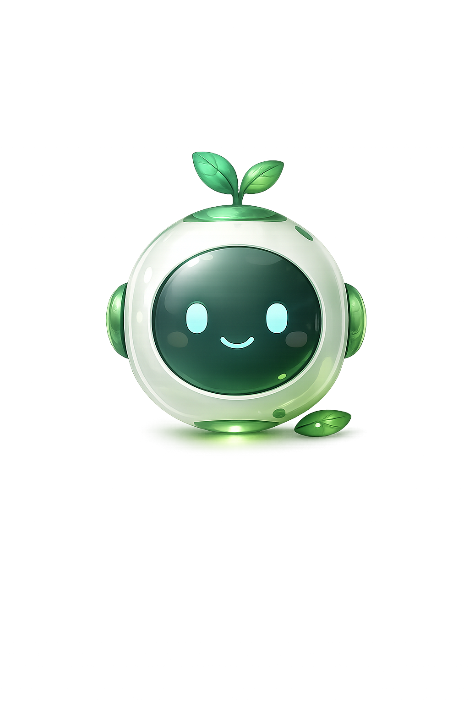

EM_Q
Hi, I'm Lulo!
Your pocket companion 💙
How are you feeling?
Lulo is finding something for you... ✨

I'd love to know your name 💙
Your emotional journey with Lulo 💙
Recent Entries
Works without internet 💙
The 4-7-8 Technique:
1. Breathe IN for 4 seconds
2. Hold for 7 seconds
3. Breathe OUT for 8 seconds
4. Repeat 4 times
Do it now. 💙
👀 5 things you can SEE
✋ 4 things you can TOUCH
👂 3 things you can HEAR
👃 2 things you can SMELL
👅 1 thing you can TASTE
You are safe right now. 💙
1. Stop and breathe — panic feeds on speed
2. Name what you feel — saying it reduces it
3. Look for what's real — am I actually in danger?
4. Move your body — stand up, walk, shake your hands
5. Call someone — panic shrinks with another voice
🚨 Police/Ambulance/Fire:
🇺🇸 USA: 911 | 🇬🇧 UK: 999
🇳🇬 Nigeria: 112 | 🇷🇺 Russia: 112
🌍 Most countries: 112
🧠 Mental Health:
🇺🇸 USA: 988 | 🇬🇧 UK: 116 123
🌍 International: befrienders.org